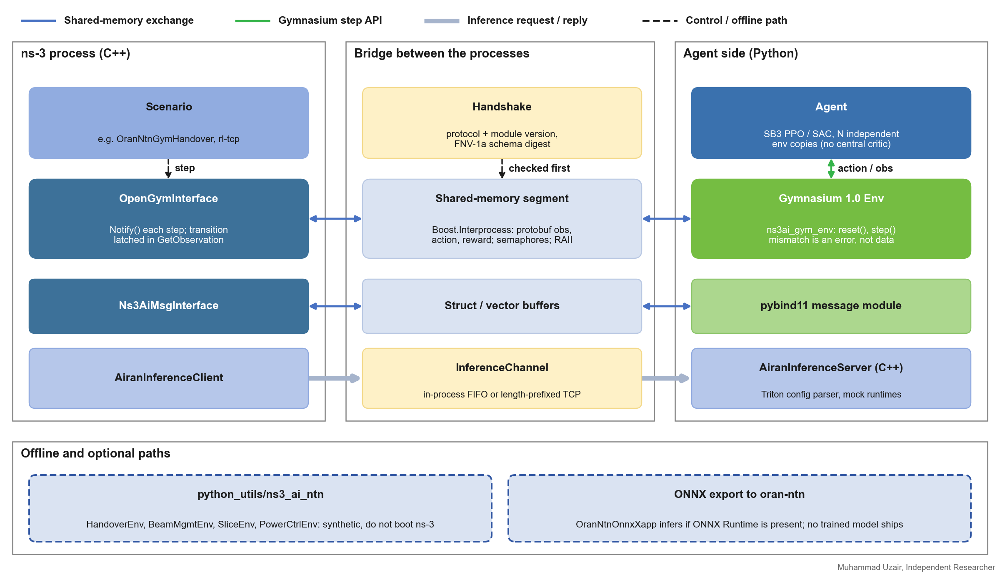
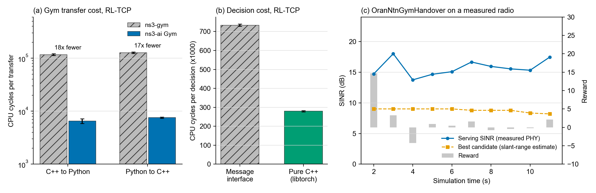
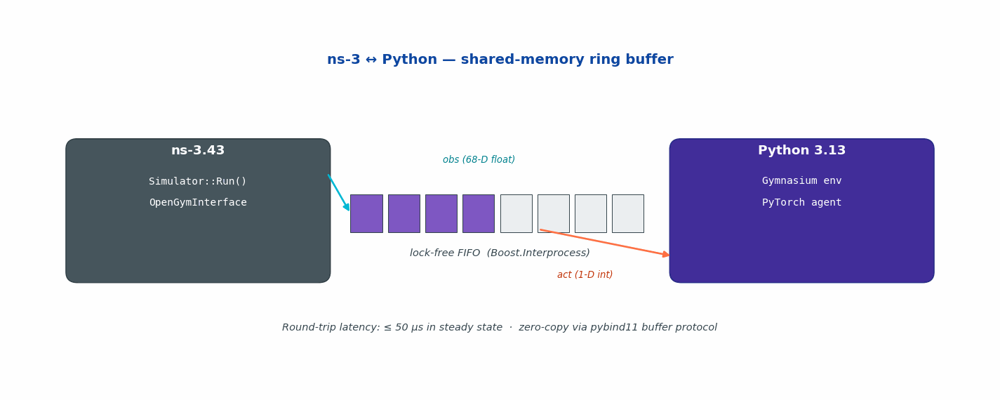
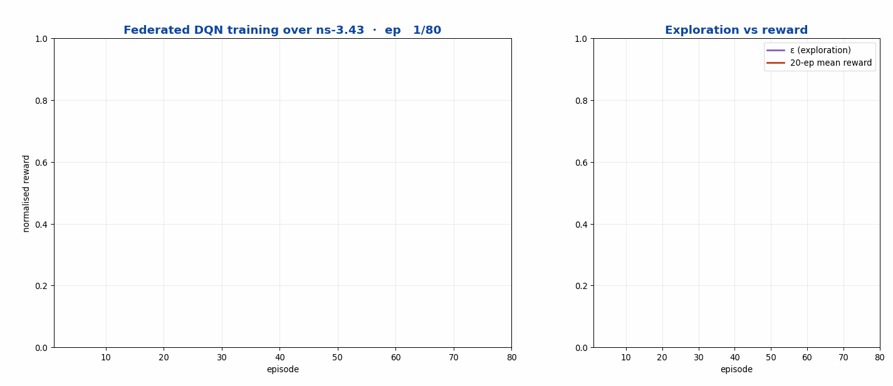

ns3-ai-ntn
A modernized ns3-ai bridge for ns-3.49: Gymnasium 1.0 over versioned shared memory, an AI-RAN inference contract, and NTN reinforcement-learning tooling
Project page, release and live runs

Project page · Release v3.0.1 · Run the examples at 6g-ntn.live · YouTube demo · LinkedIn


Toolkit · Docs · Install · Results · Examples
Source
This page mirrors contrib/ns3-ai-ntn/README.md. Figures are regenerated by the make_*.py scripts in contrib/ns3-ai-ntn/doc/figures/.
Why this module¶
Reinforcement learning against a network simulator fails in two characteristic
ways, and this fork fixes both. First, the agent may never be stepped:
registering a Gymnasium interface without a Notify() call site gives a training
loop that runs, converges and learns nothing. Second, the reward may be computed
from state the action has not reached yet, which inverts it. On the original code
a 5 to 15 dB improvement earned -15 while a 15 to 5 dB degradation earned -5, so
the agent was paid more to make the link worse. The fix for the second is
structural: the transition is latched inside GetObservation.
The C++ and Python sides share a protobuf schema over shared memory, a contract that used to be unchecked. The handshake now carries a protocol version, a module version and an FNV-1a schema digest, so a mismatch is reported instead of being misread as data. Upstream ns3-ai also crashed on NumPy 2.0, failed to import on Python 3.13 and lost pybind11 symbols under ns-3.43 link-time optimization; this fork fixes those and 8 other issues.
System design¶

Two processes and the bridge between them. The handshake is checked before the first step. The Gym path carries protobuf observations, actions and rewards; the message path carries fixed-layout structs and vectors; the AI-RAN inference contract runs over an in-process FIFO or length-prefixed TCP. Dashed boxes are offline or optional. Script: doc/figures/make_ns3_ai_ntn_design.py.
Results¶

(a) and (b): upstream ns3-ai benchmark on the RL-TCP example, 6 seeds, bars are means over seeds and whiskers the standard deviation across seeds; data in docs/benchmarking/gym-interface-data.m and docs/benchmarking/pure-cpp-data.m. (c): one 12 s run of oran-ntn-gym-handover-example in in-process mode (3 satellites, 2 UEs), parsed from the stored log toolkit-audit-2026-10-06/runs/A6-ai-twin-security/gym-inproc-12s/run.log. Script: doc/figures/make_ns3_ai_ntn_results.py; table: ns3_ai_ntn_results_summary.csv.
| Measurement | Value | Source |
|---|---|---|
| C++ to Python transfer, ns3-gym vs ns3-ai Gym | 117,017 vs 6,518 cycles (18x fewer) | upstream benchmark, 6 seeds |
| Python to C++ transfer, ns3-gym vs ns3-ai Gym | 127,148 vs 7,584 cycles (17x fewer) | upstream benchmark, 6 seeds |
| RL decision, message interface vs pure C++ (libtorch) | 733,702 vs 279,648 cycles | upstream benchmark, 6 seeds |
| Gym steps on the measured radio, mean serving SINR | 10 steps, 15.71 dB | 1 run, 12 s |
Panel (c) shows what the environment sees: feature 0, the serving SINR, is measured off the PHY receive trace; the best-candidate SINR is a free-space slant-range estimate, and the greedy A3-offset rule keys on it, so the agent stays on the serving satellite for the whole run. The cycle counts in (a) and (b) were measured by the upstream ns3-ai authors; they were not re-measured on this fork.
The Python package's validation gates (PPO against a random policy on
HandoverEnv, GAT next-hop accuracy on a 50-node graph) are listed in
python_utils/README.md; their raw outputs are not
stored in the tree. Rerun with
python -m ns3_ai_ntn.sb3.train_ppo_handover --total-steps 10000 --seed 0 --out ppo_result.json.
Gallery¶


Classes¶
| Class or package | Role | Location |
|---|---|---|
OpenGymInterface, Ns3AiGymEnv |
Gym interface on the C++ side; Notify() per step, transition latched in GetObservation |
model/gym-interface/cpp/ |
ns3ai_gym_env |
Gymnasium 1.0 environment on the Python side; checks the handshake digest | model/gym-interface/py/ |
Ns3AiMsgInterface |
low-level message interface for fixed-layout structs and vectors, RAII over managed_shared_memory |
model/msg-interface/ |
AiranInferenceClient, AiranInferenceServer |
AI-RAN inference contract, length-prefixed protobuf (grpc/proto/airan_inference.proto) |
grpc/cpp/ |
InferenceChannel (in-process, TCP) |
pluggable transport; a native grpc++ transport is planned | grpc/cpp/inference-channel*.h |
Triton config parser, AiranMockRuntime |
parses config.pbtxt; deterministic mock runtimes for beam_index_classifier and precoder_csi_to_weights |
grpc/cpp/, grpc/triton/ |
ns3_ai_ntn |
Python package: 4 environments, SB3 PPO trainer, PyTorch Geometric GAT, parameter-shared multi-agent wrappers, ns3gym shim |
python_utils/ns3_ai_ntn/ |
ns3ai_add_pybind_module() |
CMake helper that disables LTO per pybind11 target (the ns-3.43 import failure) | CMakeLists.txt |
Quick start¶
Inside the toolkit, where the module is present and built:
./ns3 build ns3ai_apb_gym
cd contrib/ns3-ai-ntn/examples/a-plus-b/use-gym/ && python3 apb.py
# a Gym agent against a measured NR NTN cell (blocks until the Python peer connects)
./ns3 run "oran-ntn-gym-handover-example --gym=1"
Standalone, into an existing ns-3.49 tree:
git clone -b ns3-ai-ntn-v4 \
https://github.com/Muhammaduazir69/ns3-ai.git contrib/ns3-ai-ntn
./ns3 configure --enable-examples --enable-tests
./ns3 build
pip install -e contrib/ns3-ai-ntn/model/gym-interface/py
pip install -e "contrib/ns3-ai-ntn/python_utils[all]"
With Docker, prebuilt: docker run --rm -it uzairdocker69/ns3-ntn-toolkit:latest bash.
Examples¶
Each example directory has its own README. The Python script drives the run and spawns the matching ns-3 binary.
| Example | CMake targets | What it shows |
|---|---|---|
| a-plus-b | ns3ai_apb_gym, ns3ai_apb_msg_stru, ns3ai_apb_msg_vec |
hello world for both interfaces: C++ sends numbers, Python returns the sum |
| rl-tcp | ns3ai_rltcp_gym, ns3ai_rltcp_msg, ns3ai_rltcp_purecpp |
DQN congestion control over the Gym or message interface, or pure C++ |
| rate-control | ns3ai_ratecontrol_constant, ns3ai_ratecontrol_ts |
Wi-Fi rate control (constant, Thompson sampling) |
| lte-cqi | ns3ai_ltecqi_msg, ns3ai_ltecqi_purecpp |
online LSTM CQI prediction in an LTE scheduler |
| multi-bss | ns3ai_multibss |
multi-BSS Wi-Fi channel access with a VR traffic app |
oran-ntn-gym-handover-example (in oran-ntn) |
OranNtnGymHandover on a measured NR NTN radio; --gym=1 uses this bridge |
Tests¶
# C++ AI-RAN inference contract: codec round trips, in-process and TCP channels,
# Triton config parsing, failure modes, an in-simulator workload (10 cases)
./test.py -s oran-ntn-airan-inference
# Python NTN extensions (11 tests: environments, GNN, SB3)
cd contrib/ns3-ai-ntn/python_utils && pip install -e .[test] && pytest tests/ -v
Dependencies¶
Boost 1.70 or newer (interprocess, program_options), pybind11 2.13 (CMake
package), protobuf, Python 3.10 to 3.13, NumPy 2, Gymnasium 1.0. Optional:
Stable-Baselines3 and PyTorch Geometric for python_utils; a libtorch or
libtensorflow distribution in model/ enables the pure-C++ examples, which are
skipped otherwise. See INSTALL.md.
Honest scope¶
- The four NTN environments in
python_utils/ns3_ai_ntn(HandoverEnv,BeamMgmtEnv,SliceEnv,PowerCtrlEnv) are synthetic: they do not boot ns-3 and carry no measured KPI. They exercise the RL tooling. The environment that runs on a measured radio isOranNtnGymHandoverinoran-ntn. - The bundled trainers are single-agent PPO and SAC over N independent environment copies. The MAPPO and MASAC wrappers share parameters but have no centralized critic and no joint observation; the agents cannot see or affect each other.
- The inference contract mirrors the wire format a grpc++ server would expose, but the native grpc++ transport is not implemented yet; the runtimes behind it are deterministic mocks, not trained models.
- 3GPP TR 38.843 AI/ML lifecycle management is not implemented.
Citation¶
Please cite the toolkit article, and the original ns3-ai paper for the bridge:
M. Uzair et al., "ns3-ntn-toolkit: An integrated ns-3 platform for 6G non-terrestrial networks," IEEE Open Journal of the Communications Society, 2026, doi: 10.1109/OJCOMS.2026.3745010.
@article{uzair2026ns3ntntoolkit,
author = {Uzair, Muhammad and others},
title = {ns3-ntn-toolkit: An Integrated ns-3 Platform for 6G Non-Terrestrial Networks},
journal = {IEEE Open Journal of the Communications Society},
year = {2026},
doi = {10.1109/OJCOMS.2026.3745010}
}
@inproceedings{yin2020ns3ai,
title = {{ns3-ai}: Fostering Artificial Intelligence Algorithms for Networking Research},
author = {Yin, Hao and others},
booktitle = {Proc. Workshop on ns-3 (WNS3)},
year = {2020}
}
License¶
GPL-2.0-only, matching ns-3 and upstream ns3-ai.
Contact¶
Muhammad Uzair, Independent Researcher. Email muhammaduzairr69@gmail.com, ORCID 0009-0002-4104-2680. Part of the ns3-ntn-toolkit, mirrored on GitLab.